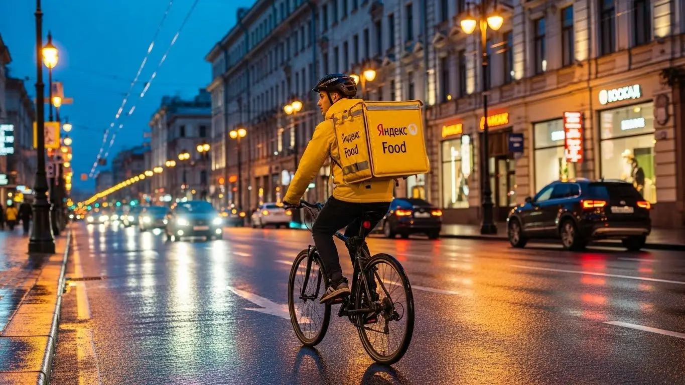
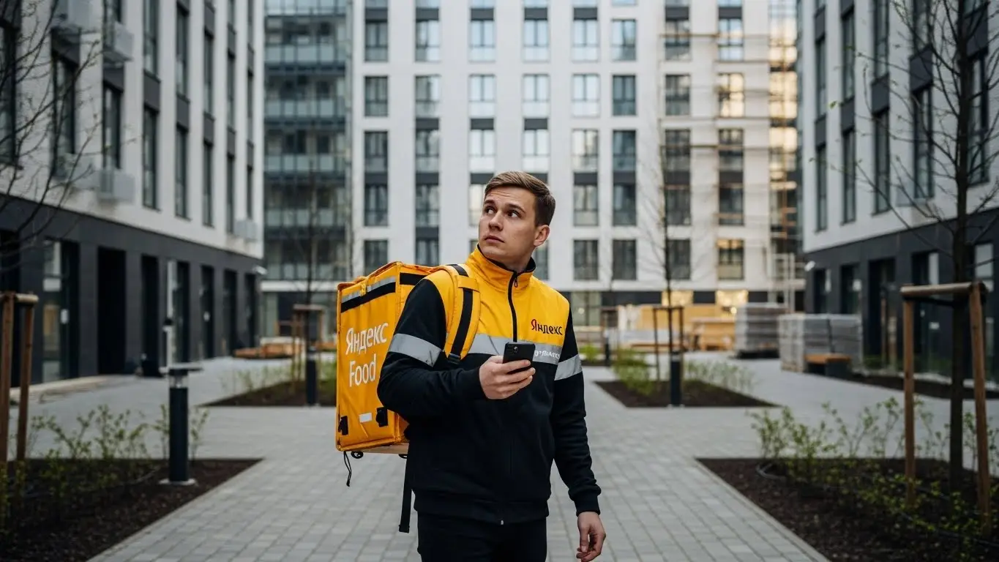

Работа курьером Яндекс Еды в Ростове-на-Дону: доход 2025-2026

- Работа курьером Яндекс Еды в Ростове-на-Дону: для кого эта вакансия и что вы получите
- Сколько вы будете зарабатывать курьером в Ростове-на-Дону: калькулятор дохода и разбор выплат
- Реальный заработок курьера в Ростове-на-Дону: смены и месячный доход
- График работы и форматы занятости
- Что нужно, чтобы стать курьером: требования и документы
- Самозанятость, налоги и юридическая чистота
- Пошаговое оформление и первый выход на линию в Ростове-на-Дону
- Пешком, на вело или на авто: что выгоднее в Ростове-на-Дону
- Районы, маршруты и «топовые» зоны заказов в Ростове-на-Дону
- Безопасность, страховка, штрафы и оплата простоя
- Плюсы и возможные минусы работы курьером в Ростове-на-Дону
- Реальные истории и отзывы курьеров из Ростова-на-Дону
- Ответы на главные вопросы о работе курьером Яндекс Еды в Ростове-на-Дону
- Короткие ответы на главные вопросы
- Итоги и ваш следующий шаг
Все города
Думаешь взять желтый термокороб и пойти в курьеры Яндекс Еды или Лавки в Ростове-на-Дону? И правильно делаешь, что ищешь инфу, а не веришь рекламе на слово. Боишься, что будешь зарабатывать копейки, часами стоять в пробках на Нагибина или Красноармейской, а в итоге «убьешь» велик или подвеску машины на наших дорогах? Это реальные риски. Я здесь, чтобы рассказать, как на самом деле устроена работа курьером Яндекс Еда в Ростове-на-Дону, без розовых очков и обещаний золотых гор.
Пойми, работа курьером в Ростове — это не просто «взял заказ – отвез». Это чистая математика и знание города. Нужно считать всё: бензин или калории, налог самозанятого, амортизацию. Чтобы увидеть актуальные требования, калькулятор дохода и сразу перейти к анкете, изучи официальную страницу, где описана работа курьером Яндекс Еда в Ростове-на-Дону. Нужно понимать, почему в центре заказ стоит дороже, но и времени на него уходит больше, а на Западном или Северном — наоборот. Большинство новичков выгорают в первый же месяц, потому что не знают этих фишек: где парковаться у ТЦ «Горизонт», в какое время лучше не соваться на Садовую и как твой рейтинг влияет на количество заказов.
Здесь я всё разложу по полочкам. Мы честно посчитаем, сколько реально можно заработать пешком, на велике и на авто. Я покажу, какие районы в Ростове-на-Дону самые «жирные» по заказам, а какие лучше объезжать стороной. Разберем, как ростовская жара и зимний гололед влияют на доход, за что реально штрафуют и как этого избежать. И, конечно, сравним, чем Яндекс Еда и Лавка отличаются от других доставок, которые работают в нашем городе.
Меня зовут Алексей. Я сам откатал не одну тысячу километров по Ростову с коробом за спиной, а сейчас у меня свой небольшой таксопарк-партнер. Я видел эту кухню со всех сторон — и как курьер на линии, и как тот, кто помогает ребятам выходить на смену. Так что забудь про рекламные буклеты. Дальше будет только правда: с цифрами, лайфхаками и конкретными советами для тех, кто хочет работать и зарабатывать в Ростове-на-Дону, а не просто тратить время. Готов? Тогда поехали, сейчас всё разложу.
Чтобы ты не запутался во всех этих деталях, я сделал короткий навигатор по главным темам.
Что ты точно узнаешь из этого разбора
В этой статье ты ТОЧНО узнаешь:
- Сколько на самом деле можно заработать в Ростове-на-Дону за смену и за месяц, если работать пешком, на велосипеде или на авто?
- Какие районы и ТРЦ в Ростове самые «жирные» по заказам и как ловить пиковые часы с высокими коэффициентами?
- Что выгоднее выбрать для Ростова — пешую доставку, велосипед или автомобиль, и какие у каждого варианта есть подводные камни?
- За что реально штрафуют, как работает страховка и что такое «оплата простоя», если заказов вдруг нет?
- Как за 10 минут оформить самозанятость, сколько платить налогов и почему это проще и безопаснее, чем работать «всерую»?
А если тебе некогда читать всю статью — переходи сразу к заключению, где ты найдёшь короткие ответы на все эти вопросы и указания, в каких разделах искать подробности.
А вот ключевые цифры по работе в Ростове-на-Дону в одной картинке, чтобы было наглядно.
Работа курьером в Ростове-на-Дону: ключевые цифры
Доход в час
350–550 ₽
В часы пик, с бонусами и в районах высокого спроса
Доход за смену
2800–4000 ₽
Средний заработок за полный 8-часовой слот
Чаевые от клиентов
~25%
Примерно каждый 4-й заказ в Ростове-на-Дону
Свободный график
2–12 ч
Вы сами выбираете длительность слотов и дни недели
Работа курьером Яндекс Еды в Ростове-на-Дону: для кого эта вакансия и что вы получите
Давай начистоту: работа курьером — это не для всех, но для многих в Ростове она может стать настоящим спасением. Это не та вакансия, где нужно сидеть в душном офисе с 9 до 6 и ждать зарплату раз в месяц. Здесь всё иначе: ты сам себе хозяин, решаешь, когда и сколько работать, а деньги получаешь в формате ежедневных выплат. Если ты ценишь свободный график и не боишься движения, то эта работа в Яндексе точно для тебя.
Кому подойдёт эта работа в Ростове-на-Дону
По моему опыту, в Ростове-на-Дону в курьеры идут самые разные люди. В первую очередь, это студенты. Учишься ты в ЮФУ или ДГТУ — неважно. График легко подстроить под пары: вышел на пару часов после учёбы, выполнил несколько заказов в центре и получил живые деньги. Ещё это те, кому нужна постоянная подработка. Может, у тебя есть основная работа со сменным графиком или просто нужны дополнительные деньги. Выходишь на линию в свои выходные или по вечерам — и вот тебе плюс 15-20 тысяч к основному доходу.
Также это отличный вариант для тех, у кого пока нет опыта работы или специальности. Условия работы в Яндекс Еде просты: не смотрят на диплом, главное — ответственность и желание работать. Это одна из причин, почему многие начинают именно с этой подработки.
И конечно, это работа для водителей. Если у тебя есть своё авто, ты можешь стать курьером на автомобиле и хорошо зарабатывать, выполняя заказы на дальние расстояния. В общем, если тебе важен гибкий график, быстрые ежедневные выплаты и независимость — тебе сюда.

Главные преимущества для жителей районов Западный, Северный, Центр
Основной плюс этой работы в Ростове — возможность доставлять заказы рядом с домом. Тебе не нужно каждое утро тащиться через весь город, стоять в пробках на проспекте Стачки или на Ворошиловском мосту. Живёшь ты на Западном (ЗЖМ) — включаешь приложение Яндекс Про и начинаешь брать заказы из местных кафе и магазинов в своём же районе. То же самое касается и Северного (СЖМ) — там полно работы, и не нужно ехать в центр.
Для жителей центральных районов, например, Кировского или Ленинского, вообще раздолье. Здесь концентрация ресторанов и кафе на квадратный метр зашкаливает, особенно в районе Большой Садовой и Пушкинской. Как пеший курьер или курьер на велосипеде ты сможешь делать по 4-5 заказов в час на короткие расстояния. Ты экономишь время и деньги на дорогу, потому что твоя работа начинается прямо у подъезда.
Краткое обещание по доходу и условиям
Теперь о главном — о деньгах. В Ростове-на-Дону реальный доход курьера зависит только от тебя. Если выходить на подработку на 4-5 часов в день, можно спокойно делать 1500–2500 рублей. При полной занятости, особенно если ты курьер на автомобиле, доход может доходить до 4000–5000 рублей в день. В месяц при плотном графике вполне реально получать зарплату в 70 000–90 000 рублей. И это не абстрактные цифры, а то, что получают мои ребята.
Самое важное: деньги приходят на карту каждый день. Выполнил заказы — получил выплату. Никакого ожидания до аванса или зарплаты. График полностью свободный: ты сам выбираешь в приложении, когда выходить на смену. И для старта не нужен опыт — всему научат на коротком онлайн-инструктаже. Просто берёшь и начинаешь зарабатывать.
Вот живой пример. Парень-студент из РГУПСа, живёт на Западном. После пар выходит на 3-4 часа как велокурьер. Катается по своему району, развозит заказы Яндекс Еды из «Ташира» и окрестных кафе. За вечер спокойно делает 1200-1500 рублей. Говорит, на жизнь хватает, и не нужно у родителей деньги просить.
В общем, работа курьером в Ростове — это реальная возможность зарабатывать без начальников, имея полностью свободный график. Главное преимущество — ты работаешь там, где тебе удобно, и получаешь выплаты сразу. Мой совет новичкам: не гонитесь сразу за «жирными» зонами в центре, начните со своего района. Так вы спокойно освоитесь, изучите спрос и не будете тратить лишнее время на дорогу.
Сколько вы будете зарабатывать курьером в Ростове-на-Дону: калькулятор дохода и разбор выплат
Сразу скажу: фиксированной зарплаты у курьера нет, и это хорошо. Твой доход — это не оклад, а сумма, которую ты сам себе заработал. Она складывается из нескольких частей, и если понимать, как это работает, можно зарабатывать значительно больше. Никто не будет платить за просиживание штанов, но за активную и умную работу система Яндекса вознаграждает щедро.
Из чего складывается доход курьера
Твой заработок за смену — это не просто плата за количество доставок. Система гораздо интереснее. Во-первых, есть базовая оплата за каждый выполненный заказ. Во-вторых, к ней добавляется доплата за расстояние. В-третьих, самое главное — это повышающие коэффициенты. В часы пик, в выходные или в плохую погоду, когда в Ростове ливень, спрос на доставку резко растёт. В приложении Яндекс Про такие зоны подсвечиваются, и стоимость заказа умножается на коэффициент.
Кроме этого, есть бонусы за выполнение определённого числа заказов и чаевые от клиентов — они твои на 100%. Важный момент, который отличает условия Яндекса: есть оплата простоя на плановых слотах (если заказов мало, начисляется минимальная ставка) и возможная компенсация проезда.
Как пользоваться калькулятором дохода
Чтобы ты мог прикинуть свой потенциальный заработок, воспользуйся специальным калькулятором. Пользоваться им просто. Сначала выбираешь свой формат: пеший курьер, курьер на велосипеде или на своём авто. Затем указываешь, сколько часов в день и сколько дней в неделю планируешь работать.
Калькулятор дохода в Ростове-на-Дону
8 часов
5 дней
Примерный доход в месяц
…
Доход в день
…
Часов в месяц
…
Это примерный расчёт на основе средней ставки в Ростове-на-Дону. Реальный доход зависит от спроса, бонусов и вашего графика.
Этот калькулятор дает хорошее представление о возможном доходе. Чтобы увидеть самые актуальные условия, требования и заполнить анкету, переходи на официальную страницу — вот работа курьером Яндекс Еда в твоём городе. Там всегда свежая информация.
Калькулятор покажет примерный диапазон твоего дохода за день и за месяц. Важно понимать, что это прогноз на основе средних данных по Ростову-на-Дону. Твой реальный заработок может быть выше, если ловить пиковые часы и бонусы, или ниже, если выходить в спокойное время. Но как ориентир для старта — это отличный инструмент.
Примеры расчёта для пешего, вело- и авто‑курьера в Ростове-на-Дону
Давай на конкретных примерах, чтобы было понятнее.
- Пеший курьер в центре. Допустим, ты работаешь по вечерам в выходные, 4 часа в районе Большой Садовой. Заказы Яндекс Еды здесь короткие, но их много. За вечер ты легко сделаешь 10-12 доставок. С учётом вечернего коэффициента твой доход составит примерно 2000–2800 рублей.
- Велокурьер в спальных районах. Ты работаешь 6-8 часов в день, катаешься между Западным и Военведом. На велосипеде ты быстрее пешего и не стоишь в пробках. За день можно выполнить 15-20 заказов разной дальности. Твой заработок будет в районе 3000–3800 рублей.
- Курьер на автомобиле. Ты работаешь полный день, 8-10 часов. Берёшь заказы по всему городу: от Левенцовки до Александровки, возишь крупные покупки из гипермаркетов типа «Ашан» или «Лента» в рамках Яндекс Доставки. В плохую погоду ты вообще король, так как пешие и велокурьеры менее активны. Твой дневной доход может достигать 4500–6000 рублей и даже больше.
Расскажу случай из практики. Как-то в Ростове в пятницу вечером начался сильный ливень. Я был на машине в районе ТРЦ «Горизонт». В приложении Яндекс Про вся зона стала фиолетовой — это максимальный спрос. Коэффициент был х2.8. Заказы сыпались один за другим. За три часа я заработал около 3500 рублей — столько обычно делаю за 6-7 часов в обычный день.
Итак, твой заработок — в твоих руках. Он состоит из оплаты за заказы, расстояние, бонусов и коэффициентов. Чтобы зарабатывать больше, нужно не просто работать много, а работать с умом. Всегда следи за картой спроса в приложении Яндекс Про. Выход на линию в «горячей» зоне даже на пару часов может принести больше денег, чем целый день работы в спокойное время.

Реальный заработок курьера в Ростове-на-Дону: смены и месячный доход
Диапазон дохода для подработки и полной занятости
Давай сразу к делу, без рекламных обещаний. Сколько зарабатывает курьер в Ростове — вот главный вопрос. Реальный доход зависит от трёх вещей: как ты доставляешь (пешком, на велосипеде или на авто), сколько часов работаешь и насколько с головой подходишь к делу.
Если для тебя это подработка, 2–4 часа в день после учёбы или основной работы, то расклад такой. Пеший курьер или велокурьер за короткую смену в 3–4 часа в среднем привозит 800–1500 рублей. В месяц выходит 15 000–30 000 рублей — неплохая прибавка к стипендии или зарплате. Курьер на своем авто за то же время заработает больше, около 1200–2000 рублей, так как может брать более дальние и дорогие заказы в Яндекс Доставке. В месяц это уже 25 000–45 000 рублей, но не забывай вычитать расходы на бензин.
При полной занятости, когда ты работаешь по 8–10 часов в день, цифры совсем другие. Пеший или велокурьер в Ростове стабильно зарабатывает 2500–4000 рублей за смену. Если работать 5 дней в неделю, в месяц выходит 50 000–80 000 рублей. Курьер на автомобиле при полной загрузке может делать 3500–6000 рублей в день, а иногда и больше. Это уже 70 000–120 000 рублей в месяц «грязными». Из них нужно вычесть топливо, амортизацию и небольшой налог для самозанятых, но даже так доход получается очень достойный для нашего города.
Как район, время суток и погода влияют на доход
Запомни простое правило: твой заработок — это не только твои ноги или колёса, но и умение быть в нужном месте в нужное время. Система работает на повышающих коэффициентах. Когда заказов много, а курьеров мало, цена доставки умножается на коэффициент — 1.5, 2, а то и 3. Твоя задача — ловить эти моменты.
Главные пики спроса в Ростове — это обеденное время (с 12:00 до 14:00) и вечер (с 18:00 до 21:00), когда люди возвращаются с работы и заказывают ужин из Яндекс Еды. Пятница, суббота и воскресенье — это вообще золотые дни, особенно вечера. В это время центр города, районы вроде Западного и Северного просто «горят» на карте спроса в приложении.
Погода — твой лучший друг. Как только в Ростове начинается ливень, сильная жара или снегопад, большинство курьеров прячутся по домам. А люди, наоборот, начинают заказывать еду и продукты ещё активнее. В такие моменты коэффициенты взлетают до небес. Клиенты тоже становятся щедрее на чаевые, потому что понимают, в каких условиях ты работаешь. Так что, если не боишься промокнуть или вспотеть, в плохую погоду можно за 3–4 часа заработать как за целый день.
Советы по увеличению заработка от опытных курьеров
Чтобы зарабатывать больше, не обязательно работать сутками. Нужно работать умнее. Во-первых, планируй свои смены. Не бери длинные слоты на 12 часов в будний день — скорее всего, в середине дня будет просадка по заказам, и ты просто устанешь. Лучше взять два коротких слота: один на обеденный пик, второй — на вечерний. Так ты будешь работать в самое прибыльное время и успеешь отдохнуть.
Во-вторых, изучай карту в «Яндекс Про». Не сиди на одном месте, даже если там много ресторанов. Смотри, где зоны подсвечены фиолетовым — это значит, там высокий спрос и действуют коэффициенты. Иногда выгоднее потратить 15 минут и доехать до «горячей» зоны в спальном районе, чем ждать средний заказ в центре. Научись понимать логику города: где офисы, где большие жилые комплексы, откуда чаще всего заказывают.
В-третьих, будь гибким. Если у тебя есть и велосипед, и машина, используй их по ситуации. В центре Ростова с его пробками и узкими улочками днём на велосипеде ты будешь быстрее и заработаешь больше. А вечером или в плохую погоду пересаживайся на машину, чтобы брать дорогие заказы на большие расстояния, например, из центра на Западный или в пригород. Такая комбинация позволяет выжимать максимум из любой ситуации.
Вот тебе реальный пример. Мой знакомый парень, курьер на автомобиле, раньше просто катался по центру и зарабатывал средне. Потом он заметил, что по вечерам в пятницу в районе ТРЦ «Горизонт» и на Северном всегда дикий спрос. Он стал брать слоты именно там с 18:00 до 23:00. В итоге его средний заработок за смену вырос почти в полтора раза, потому что он перестал стоять в мёртвых пробках в центре и начал работать там, где заказы сыплются один за другим.
В общем, твой доход от работы курьером в Ростове-на-Дону напрямую зависит от твоего подхода. Можно просто выполнять заказы, а можно анализировать спрос, погоду и время, чтобы работать меньше, а зарабатывать больше. Всегда выбирай второй вариант.
График работы и форматы занятости
Подработка после учёбы или основной работы
Свободный график — это не просто слова, это главный козырь работы курьером. Ты сам решаешь, когда и сколько работать. Это идеально подходит, если у тебя есть основная работа или ты учишься. Никаких начальников, которые будут отчитывать за опоздание, и никаких обязательных смен.
Пример первый: студент ДГТУ. Живёт в районе Комсомольской площади. Учёба заканчивается в 16:00. Он берёт велосипед и выходит на 4-часовой слот с 17:00 до 21:00, как раз на вечерний пик. Катается по центру и ближайшим районам. За 4–5 таких выходов в неделю он спокойно делает 20 000–25 000 рублей в месяц. Деньги на карманные расходы, кафе и помощь родителям есть всегда.
Пример второй: офисный работник, живёт на Западном. Работает до 18:00, приезжает домой, ужинает. В 19:30 садится в свою машину и выходит на линию на 2–3 часа. Такая подработка курьером позволяет развозить заказы по своему же району, далеко не ездя. За неделю набегает 4–5 таких коротких смен. В итоге — плюс 25 000–30 000 рублей к основной зарплате. Этими деньгами он полностью покрывает расходы на бензин, мойку и даже кредит за машину.
Полная занятость: как выглядит типичный день курьера
Если ты решил сделать доставку своей основной работой, твой день будет более структурированным, но всё таким же свободным. Типичный день курьера на полной занятости в Ростове выглядит примерно так.
Выход на линию обычно в 10–11 утра, чтобы захватить первые заказы на обед. Утро и день до 15:00 — это время для работы в центре, в районе Большой Садовой, или рядом с крупными бизнес-центрами, где много офисов.
После 15:00 наступает небольшое затишье. Это лучшее время, чтобы спокойно пообедать, отдохнуть или переместиться в другой район. Многие опытные курьеры в это время едут в крупные спальные районы, например, на Западный или Северный, потому что оттуда начинают идти заказы из гипермаркетов типа «Ленты» или «Ашана».
С 17:00 и до 21:00–22:00 — самый пик. Заказы в Яндекс Еде и Доставке идут отовсюду: из ресторанов, кафе, магазинов. В это время главное — не простаивать и быстро выполнять доставки. Заказы чередуются: то короткий на пару километров, то длинный через полрайона. Ты сам решаешь, когда сделать перерыв — в приложении есть кнопка, которая временно приостанавливает подачу заказов. Отработал 8–10 часов, выполнил свою норму по заработку — и домой.
Как планировать слоты и выходы через приложение «Яндекс Про»
Вся твоя работа управляется через приложение «Яндекс Про». Там есть два основных режима: свободные выходы и плановые слоты. Свободный выход — это когда ты можешь в любой момент нажать кнопку «На линию» и начать получать заказы. Удобно, если появилось пара свободных часов. Но доход здесь менее предсказуем.
Плановые слоты — это твой основной инструмент для стабильного заработка. Ты заранее открываешь расписание в приложении и выбираешь удобные для тебя временные интервалы (слоты) в конкретных районах города. Например, можешь забронировать слот в центре с 18:00 до 22:00 на пятницу. Плюс плановых слотов в том, что на них часто бывают бонусы и гарантии минимального дохода. К тому же, заработанные деньги можно выводить на карту хоть каждый день.
Критически важно относиться к плановым слотам ответственно. Если ты забронировал слот, ты должен быть в указанной зоне к началу времени. Приложение заранее пришлёт уведомление. Опоздания или пропуски слотов негативно влияют на твой рейтинг и уровень приоритета. Чем выше твой рейтинг, тем больше заказов ты получаешь, особенно в часы пик. Поэтому, если хочешь зарабатывать стабильно, планируй свою неделю через слоты и не подводи систему.
Вот тебе случай из жизни. К нам в парк-партнер пришёл парень, студент, начал работать на арендованной машине. Первое время выходил как попало, в свободном режиме. Заработок скакал: то густо, то пусто. Я ему посоветовал попробовать планировать. Он начал бронировать вечерние слоты на выходные и пару раз в будни. Стал приезжать в зону за 10 минут до начала. Уже через две недели его доход выровнялся и вырос примерно на 30%. Просто потому, что система видит его надёжным исполнителем и даёт ему больше заказов.
В итоге, свободный график — это не анархия. Это возможность строить рабочий день под себя. А приложение «Яндекс Про» даёт все инструменты, чтобы это планирование было удобным и прибыльным. Главное — подходить к этому с умом.
Что нужно, чтобы стать курьером: требования и документы
Многих пугает, что для работы курьером нужна кипа бумаг и какие-то особые навыки. На деле всё гораздо проще. Тебе не понадобится диплом или рекомендательные письма. Главные требования к курьеру — быть ответственным, пунктуальным и готовым двигаться. Давай по порядку разберём, что именно от тебя потребуется.
Возраст, гражданство и базовые условия
Начнём с основ. Чтобы стать курьером в сервисах Яндекса, нужно соответствовать нескольким простым, но строгим условиям. Во-первых, возраст: устроиться на работу можно строго с 18 лет. Сервис не делает исключений, даже с согласия родителей, так как это связано с материальной ответственностью и заключением официального договора.
Во-вторых, гражданство. Ты должен быть гражданином России или одной из стран Евразийского экономического союза (ЕАЭС), куда входят Беларусь, Казахстан, Армения и Киргизия. Это необходимо для легального оформления. Что касается физической формы, то от тебя не ждут олимпийских рекордов. Если ты пеший курьер или курьер на велосипеде, будь готов много ходить или ездить. Особенно в Ростове-на-Дону, где летом жарко, а в центре хватает подъёмов. Для курьера на автомобиле главное — уверенно управлять машиной и хорошо ориентироваться в городе.
Какие документы нужны для работы курьером
Подготовка документов — это важный этап, который лучше пройти заранее. Список для работы курьером короткий и понятный, ничего сверхъестественного собирать не придётся.
Вот что тебе понадобится:
- Паспорт. Основной документ для подтверждения личности и возраста. Нужен будет скан или качественное фото.
- ИНН (Идентификационный номер налогоплательщика). Он необходим для оформления статуса самозанятого. Если не помнишь свой номер, его можно за пару минут бесплатно узнать на сайте ФНС или через Госуслуги.
- Банковская карта на твоё имя. Подойдёт карта любого российского банка системы МИР, Visa или Mastercard. На неё будут приходить выплаты.
- Медицинская книжка. Для работы с заказами из ресторанов и кафе она часто является обязательным требованием. Советую сделать её заранее в любом медцентре Ростова, чтобы расширить список доступных заказов и не ждать потом.
- Для курьеров на автомобиле дополнительно: водительское удостоверение (ВУ) и свидетельство о регистрации транспортного средства (СТС).
Как видишь, список простой. Большинство этих документов и так всегда под рукой. Главное — проверить их актуальность.
Можно ли работать с 16 лет и какие есть альтернативы
Один из самых частых вопросов: можно ли устроиться в Яндекс Еду с 16 или 17 лет? Ответ — нет, нельзя. Сервис устанавливает строгое возрастное ограничение — 18 полных лет. Это связано с юридическими аспектами: работа курьером предполагает заключение договора, материальную ответственность за заказы и деньги, а также самостоятельную уплату налогов в статусе самозанятого.
Если тебе ещё нет 18, но хочется зарабатывать, не отчаивайся. Рассмотри другие варианты подработки, которые доступны подросткам в Ростове. Например, можно поработать промоутером, раздавать листовки или помогать в организации мероприятий. Иногда небольшие местные заведения ищут помощников на неполный день. Это будет хорошим опытом, а как только исполнится 18 — добро пожаловать в доставку.
Из практики: у меня был случай с парнем, студентом ЮФУ, который хотел подрабатывать. Он думал, что оформление займёт неделю. На деле он нашёл свой ИНН на Госуслугах за пять минут, сфотографировал паспорт, а для выплат использовал свою обычную стипендиальную карту. Единственное, на что ушёл почти целый день — оформление медкнижки в клинике на Текучёва. Зато уже через два дня после подачи заявки он вышел на свой первый слот в центре Ростова и заработал 1200 рублей за 4 часа.
Краткий вывод: Требования к курьерам простые и понятные: возраст от 18 лет, гражданство РФ или ЕАЭС и стандартный пакет документов. Никаких сложностей здесь нет. Мой совет: если у тебя нет медкнижки, займись её оформлением сразу после подачи заявки. Так ты не потеряешь время и сможешь брать больше выгодных заказов с первого дня работы.

Самозанятость, налоги и юридическая чистота
Многих новичков пугают слова «самозанятость» и «налоги». Кажется, что это сложно и связано с бумажной волокитой. На самом деле, всё наоборот. Статус самозанятого был придуман государством как раз для того, чтобы максимально упростить легальную работу для таких людей, как мы — курьеров, фрилансеров, таксистов. Это твой способ работать честно и без головной боли.
Почему курьеры Яндекс Еды работают как самозанятые
Работа курьером в сервисах Яндекса — это не трудоустройство в классическом понимании, где есть начальник и строгий оклад. Это партнёрство. Ты — независимый исполнитель, а Яндекс — платформа, которая даёт тебе заказы. Формат самозанятости (или налог на профессиональный доход, НПД) идеально подходит для такой модели.
Главные плюсы этого формата — прозрачность и простота. Во-первых, ты получаешь официальный доход, который можно подтвердить, например, для получения кредита. Во-вторых, не нужно вести сложную бухгалтерию или сдавать декларации. Всё происходит автоматически. В-третьих, это полностью легально. Ты спокойно работаешь, платишь небольшой налог и не боишься проверок. Это гораздо надёжнее, чем получать деньги в конверте.
Как за 10 минут оформить самозанятость через «Мой налог»
Зарегистрироваться самозанятым проще, чем создать аккаунт в соцсети. Весь процесс занимает не больше 10 минут и делается прямо с телефона. Никуда ходить не нужно.
Вот пошаговая инструкция:
- Скачай на смартфон официальное приложение ФНС «Мой налог». Оно есть в Google Play и App Store.
- Открой приложение и выбери способ регистрации. Самый быстрый — «По паспорту РФ».
- Наведи камеру телефона на главный разворот паспорта. Приложение само распознает все данные. Проверь их корректность.
- Далее приложение попросит тебя моргнуть или улыбнуться в камеру — это нужно для подтверждения личности.
- Подтверди регистрацию. Вот и всё, ты официально стал самозанятым.
Кстати, твоё рабочее приложение «Яндекс Про» тоже поможет на этом пути, предложив регистрацию через банки-партнёры, что может дать дополнительные бонусы. Но прямой путь через «Мой налог» — самый простой и универсальный.
Сколько и как платить налоги
Теперь о самом главном — о деньгах. Налог для самозанятых очень низкий. Когда ты получаешь доход от юридического лица, как в случае с Яндексом, ставка составляет всего 6%. Если бы ты оказывал услуги обычному человеку (физлицу), то платил бы 4%.
Процесс уплаты налога полностью автоматизирован. Яндекс сам передаёт информацию о твоих доходах в налоговую службу. В начале каждого месяца приложение «Мой налог» присылает уведомление с уже рассчитанной суммой за предыдущий месяц. Тебе остаётся только нажать кнопку «Оплатить» до 28-го числа. Это можно сделать прямо в приложении с любой банковской карты. Всё просто, прозрачно и без скрытых комиссий, что куда удобнее, чем работать неофициально.
Из практики: у меня в таксопарке работает водитель, ему около 45 лет, всю жизнь мотался по «серым» подработкам. Когда я предложил ему перейти на доставку и оформить самозанятость, он долго отнекивался, боялся налогов и отчётов. Я сел рядом с ним и мы вместе за 7 минут зарегистрировали его в «Моём налоге». За первый месяц он заработал на доставках 65 000 ₽. Когда пришла квитанция на 3900 ₽ налога, он оплатил её в два клика и сказал: «И это всё? Я думал, тут полжизни надо в очередях стоять». Теперь он спокойно работает и даже планирует взять ипотеку, так как может официально подтвердить свой доход.
Краткий вывод: Самозанятость — это не страшно, а выгодно и удобно. Она даёт легальный статус, официальный доход и минимальный налог, а весь процесс учёта и оплаты автоматизирован. Мой совет: не ищи обходных путей. Оформляй самозанятость сразу — это займёт 10 минут, но сэкономит нервы и откроет дорогу к стабильному и честному заработку.
Пошаговое оформление и первый выход на линию в Ростове-на-Дону
Многие думают, что устроиться на работу — это долго и муторно: собеседования, бумажки, ожидание. Здесь всё иначе. Весь процесс построен так, чтобы ты мог от заполнения анкеты до первого заработка дойти буквально за один день, даже если у тебя нет опыта. Система максимально автоматизирована и понятна, никаких лишних сложностей. Главное — твоё желание начать, а сервис предоставит все инструменты для быстрой подработки или полноценной занятости.
Шаг 1–2: анкета и онлайн‑обучение
Всё начинается с простой анкеты на сайте. Никаких вопросов про твои прошлые достижения или рекомендательные письма. Нужны только базовые данные: ФИО, дата рождения, номер телефона. Заполняется это дело минут за 10–15, можно прямо со смартфона. После этого твои данные проходят быструю автоматическую проверку.
Как только проверка завершена, тебе открывается доступ к короткому онлайн-обучению. Это не нудные лекции, а серия коротких видео и простых тестов прямо в приложении. Тебе покажут, как пользоваться программой «Яндекс Про», как принимать и выполнять заказы, как общаться с клиентами и службой поддержки. Цель — не завалить тебя, а убедиться, что ты понимаешь основные условия работы и правила безопасности. Прошёл тесты — и ты на шаг ближе к первому заказу.
Шаг 3: получение сумки и доступа к заказам в Ростове-на-Дону
Следующий этап — получение главного рабочего инструмента, термосумки или термокороба. Без него работать нельзя, так как важно доставлять заказы при правильной температуре, будь то горячая пицца или замороженные продукты. В Ростове-на-Дону есть несколько способов получить экипировку: в офисе партнёра-таксопарка или в специальном курьерском центре.
Не нужно заранее искать адреса и обзванивать всех подряд. После того как ты пройдёшь обучение, в приложении «Яндекс Про» появится вся необходимая информация: карта с доступными точками в Ростове, их часы работы и условия получения. Просто выбираешь ближайший и самый удобный для тебя вариант, забираешь сумку — и твой аккаунт полностью активирован для приёма заказов.
Шаг 4: первый слот и первый доход
Как только сумка у тебя на руках и аккаунт активен, можно выходить на линию. Ты сам решаешь, когда работать — это и есть настоящий свободный график. В приложении «Яндекс Про» ты выбираешь так называемые слоты — временные интервалы, в которые планируешь доставлять заказы. Для первого раза советую выбрать короткий слот на 2–3 часа в своём районе, где ты хорошо знаешь дворы и улицы. Это снимет лишний стресс.
Выбираешь слот, выходишь в указанную на карте зону, нажимаешь кнопку «На линии» — и система начинает предлагать тебе заказы поблизости. Выполняешь первый, второй, третий... А деньги за выполненные доставки поступят на твою карту уже в этот же день или на следующий. Так что от момента, когда ты решил попробовать, до реального заработка с практически ежедневными выплатами может пройти меньше суток.
Из практики: Парень из нашего парка, студент, решил подработать. Утром в понедельник заполнил анкету. Пока ехал в универ, посмотрел обучающие ролики и прошёл тесты. Днём заскочил в курьерский центр на Текучева, забрал сумку. Вечером того же дня взял слот на 4 часа в своём Северном районе. Спокойно разнёс 7 заказов из ближайших кафешек, заработал первые 1300 рублей. Деньги пришли на карту ещё до полуночи. Вот так, без долгой раскачки, за один день он превратил свободное время в реальный доход.
В итоге, оформление на работу курьером — это простая и логичная цепочка действий в твоём смартфоне. Никакой бюрократии и недельных ожиданий. Мой совет: не откладывай на потом. Если решил попробовать, просто следуй по шагам в приложении. Система сама тебя проведёт от анкеты до первого заработка.

Пешком, на вело или на авто: что выгоднее в Ростове-на-Дону
Выбор транспорта — ключевой момент, который определяет твой стиль работы, скорость и, конечно, итоговый заработок. В Ростове-на-Дону со всеми его пробками, широкими проспектами, холмами и плотной застройкой в центре каждый вариант имеет свои сильные и слабые стороны. Нет универсально лучшего способа — есть тот, который подходит именно тебе, твоему району и образу жизни.
Пеший курьер: для центра и плотной застройки в Ростове-на-Дону
Если ты живёшь в центре или рядом с ним, пешая доставка — отличный вариант. Главные плюсы очевидны: никаких расходов на топливо, проезд или обслуживание транспорта. Ты не зависишь от пробок, которые в Ростове на Большой Садовой, Буденновском или Ворошиловском могут сковать движение намертво, особенно в часы пик. Пеший курьер может срезать путь через дворы, парки и пешеходные зоны, куда машине путь заказан.
Этот формат идеален для исторического центра Ростова. Здесь на каждом шагу кафе, рестораны и магазины, а расстояния между заказами часто не превышают 1–2 километров. Ты можешь за час выполнить несколько коротких доставок в пределах одного квартала, например, в районе Пушкинской или на левом берегу Дона в летний сезон. Это, по сути, оплачиваемая прогулка, которая держит тебя в тонусе.
Велокурьер: быстрые доставки между спальными районами
Велосипед — это золотая середина между скоростью и затратами. Ты значительно быстрее пешего курьера, можешь брать заказы на 3–5 километров, но при этом всё так же не стоишь в пробках и не платишь за бензин. Для многих это ещё и «оплачиваемый фитнес», возможность совместить подработку с физической активностью.
В Ростове-на-Дону велосипед особенно хорош в крупных спальных районах, таких как Западный (ЗЖМ) или Северный (СЖМ). Эти районы огромны, и пешком от одного конца до другого не дойдёшь, а на машине можно застрять на внутренних улочках. Велокурьер же быстро перемещается между микрорайонами, доставляя заказы из гипермаркетов, пиццерий и суши-баров, которых там в избытке. Главное — быть готовым к ростовскому рельефу, подъёмы здесь встречаются.
Курьер на автомобиле: заказы по всему городу и пригороду Батайска и Аксая
Автомобиль даёт максимальную свободу и самый высокий потенциальный доход. Курьер на автомобиле может брать любые заказы: крупные и тяжёлые из супермаркетов, несколько заказов одновременно, а главное — дорогие дальние доставки. Тебе доступны маршруты через весь город, например, с Сельмаша в Левенцовку, или в пригороды — Батайск, Аксай, Чалтырь. Такие заказы хорошо оплачиваются, и конкуренции на них меньше.
Особенно выгодно работать на своем авто в плохую погоду. Когда в Ростове льёт дождь или метёт снег, количество заказов резко возрастает, включаются повышенные коэффициенты, а пеших и велокурьеров на линии становится в разы меньше. То же самое касается поздних вечерних и ночных часов. Да, есть расходы на бензин и амортизацию, но при грамотном подходе они с лихвой перекрываются заработком.
Сравнение форматов доставки в Ростове-на-Дону
| Параметр | Пеший курьер | Велокурьер | Курьер на автомобиле |
|---|---|---|---|
| Зоны работы | Центр (ул. Большая Садовая, Пушкинская), плотная застройка | Крупные спальные районы (ЗЖМ, СЖМ, Военвед) | Весь город, дальние районы (Левенцовка, Суворовский), пригороды (Аксай, Батайск) |
| Плюсы | Нет расходов, не зависит от пробок, полезно для здоровья | Скорость, маневренность, экономия на топливе, "оплачиваемый фитнес" | Высокий доход, большие и дальние заказы, комфорт в любую погоду |
| Минусы / Расходы | Низкая скорость, ограниченный радиус, физическая нагрузка | Зависимость от погоды, нужен велосипед и выносливость, холмистый рельеф | Расходы на бензин и обслуживание авто, пробки в часы пик, поиск парковки |
| Средний доход в час | Низкий | Средний | Высокий |
Из практики: У меня есть водитель, Сергей, 45 лет. Он выходит на линию на своей старенькой «Гранте» в основном по вечерам и в выходные. Его стратегия проста: он избегает центра в час пик, а берёт слоты в спальных районах. Часто ловит заказы на доставку продуктов из «Ленты» или «Ашана» — они тяжёлые, и пешие их не берут. В прошлую субботу, когда был сильный ливень, он за 6 часов работы по всему городу и в Батайск сделал почти 5000 рублей «грязными». Коэффициенты горели фиолетовым, а он спокойно ездил в тепле и сухости, слушая музыку.
В итоге, выбор транспорта — это выбор твоей рабочей стратегии. Нет смысла покупать машину специально для работы курьером, если у тебя её нет. Начинай с того, что доступно. Мой совет: оцени трезво, где ты живёшь и какие у тебя есть ресурсы. Для старта в центре — ходи пешком. Если живёшь в спальнике и есть велосипед — это твой вариант. А если есть машина и готовность работать в пиковые часы — сможешь зарабатывать больше всех.
Районы, маршруты и «топовые» зоны заказов в Ростове-на-Дону
Чтобы работа курьером приносила хороший доход, а не просто сжигала топливо, нужно понимать карту города не хуже таксиста. Ростов — город большой и контрастный, и деньги в нём распределены неравномерно. Где-то заказы сыплются один за другим с высокими коэффициентами, а где-то можно час простоять впустую. Главное правило — быть там, где люди тратят деньги: едят, работают и отдыхают.
Твоя задача — научиться читать карту спроса в приложении «Яндекс Про» и предугадывать, где будет «жарко». Не нужно гоняться за каждым заказом через весь город. Гораздо выгоднее выбрать одну-две зоны и работать в них, экономя время и топливо. Со временем ты начнёшь чувствовать ритм города: где пик в обед, а где — в девять вечера в пятницу.
Где больше всего заказов: ТРЦ, бизнес‑центры и туристические места
Самые выгодные места — это, конечно, центр и крупные торговые центры. Здесь сосредоточены рестораны, офисы и платёжеспособная аудитория. В первую очередь смотри на ТРЦ «Горизонт» и «Мега». Вокруг них всегда кипит жизнь: фуд-корты, магазины, кинотеатры. В обеденное время и по вечерам здесь стабильно горят фиолетовые зоны с повышенным спросом, а значит, и оплата за каждый заказ выше.
Второй верный источник заказов — деловой центр. Это район улиц Красноармейской, Большой Садовой, проспекта Ворошиловского. Тут множество бизнес-центров, банков и офисов. С 12 до 15 часов сотрудники массово заказывают ланчи. Вечером же заказы идут уже в дорогие жилые комплексы, которых в центре тоже хватает. Туристические зоны, особенно набережная на Береговой и Пушкинская, также дают хороший поток, особенно в тёплое время года и по выходным.
Работа в своём районе: примеры для популярных жилых кварталов
Многие новички думают, что высокий заработок возможен только в центре, но это ошибка. Мотаться через весь город из спального района — значит терять время и деньги на дорогу. Можно отлично работать и рядом с домом, если подойти с умом. Возьмём, к примеру, Западный (ЗЖМ) или Северный (СЖМ). Это огромные жилые массивы, по сути, города в городе.
В этих районах полно своих точек притяжения: локальные торговые центры, сетевые пиццерии, суши-бары, а также магазины, откуда идёт доставка Яндекс Еды. Спрос здесь, может, и не такой концентрированный, как на Садовой, но он более стабильный и предсказуемый. Ты знаешь все дворы и короткие пути, что особенно важно для пешего курьера или велокурьера. Это позволяет выполнять заказы быстрее и делать больше доставок в час, не выматываясь в пробках.
Как выбирать зоны и слоты в «Яндекс Про», чтобы не мотаться впустую
Приложение «Яндекс Про» — твой главный инструмент. Основное, на что нужно смотреть, — это карта спроса. Зоны, подсвеченные разными оттенками фиолетового, — это места, где заказов больше, чем курьеров, и действует повышающий коэффициент. Прежде чем начать слот или просто выйти на линию, открой карту и посмотри, где «горит». Если ты в пяти минутах от такой зоны — есть смысл туда сместиться.
Планируй свои маршруты. Когда получаешь заказ, смотри не только на точку А, но и на точку Б. Если заказ ведёт тебя в глухой частный сектор, откуда потом полчаса выбираться, подумай, стоит ли он того. Иногда выгоднее подождать 5–10 минут и взять заказ, который оставит тебя в оживлённом квартале. И обязательно бронируй слоты заранее, особенно на вечер пятницы и выходные. В это время и спрос максимальный, и минимальная гарантированная оплата выше.
Вот случай из практики. Один курьер на автомобиле в первый месяц жаловался, что почти всё заработанное уходит на бензин. Он брал все заказы подряд: с Северного на Сельмаш, оттуда в центр, потом на Западный. Я посоветовал ему сменить тактику: выбрать один район, например, Северный, и работать только по нему. А в центр выезжать только на пиковые 3-4 часа вечером, когда пробки спадают, а коэффициенты максимальные. Через месяц он сказал, что его чистый доход вырос почти на треть, а уставать стал меньше.
В общем, ключ к хорошему заработку в Ростове — это не хаотичные метания, а умное планирование. Изучай карту, знай свои «рыбные» места и используй пиковые часы по максимуму. Начни со своего района, изучи его досконально, а потом уже постепенно расширяй географию, осваивая центр и другие ключевые зоны.
Безопасность, страховка, штрафы и оплата простоя
Работа курьера — это постоянное движение на улице, взаимодействие с транспортом и разными людьми. Поэтому вопросы безопасности — не пустой звук. Важно понимать, что ты не один на один с проблемами: у сервиса есть механизмы защиты, но и от тебя требуется соблюдение простых правил.
Нужно чётко разделять риски и личную ответственность. От случайного падения на скользкой плитке никто не застрахован, и для этого есть страховка. А вот проехать на красный свет в спешке — это уже твой выбор, который может привести к печальным последствиям. Давай разберём, что тебя защищает, а за что могут и наказать.
Бесплатная страховка на сменах и что она покрывает
Главное, что нужно знать: как только ты выходишь на активный слот и выполняешь заказы, твоя жизнь и здоровье застрахованы. Это бесплатное страхование для тебя, все расходы берёт на себя сервис. Страховка действует на всё время доставки — с момента принятия заказа и до его завершения. Сумма покрытия доходит до 2 миллионов рублей.
Что это значит на практике? Если ты попадёшь в ДТП, упадёшь с велосипеда и сломаешь руку или тебя укусит собака у подъезда клиента — это страховой случай. Страховка может покрыть расходы на лечение и реабилитацию. Чтобы она сработала, нужно сразу же сообщить о происшествии в службу поддержки через «Яндекс Про» и следовать их инструкциям. Это реальная подушка безопасности, которая даёт уверенность.
Правила безопасности на дороге и при доставке
Страховка — это хорошо, но лучше до неё не доводить. Поэтому вот базовые правила. Если ты пеший курьер — смотри по сторонам, вытащи наушники из ушей на перекрёстках, не беги через дорогу на мигающий зелёный. Если ты велокурьер — шлем обязателен, даже если ехать два квартала. Ночью используй фонари и светоотражатели. Веди себя на дороге предсказуемо.
Для курьеров на автомобиле главное — не гонять. Опоздание на 5 минут не стоит разбитой машины или чьей-то жизни. Паркуйся аккуратно, не бросай машину «на аварийке» посреди дороги, даже если «на секундочку». В плохую погоду — дождь, гололёд — снижай скорость вдвое. И общее для всех: аккуратно обращайся с заказом, особенно с напитками в термокоробе.
Какие бывают штрафы и как их избежать
Да, в сервисе есть штрафы, или, как их называют, депремирование. Но их применяют не за мелочи, а за серьёзные нарушения, которые вредят репутации сервиса. Самые частые причины — это грубость клиенту или сотруднику ресторана, порча заказа (привёз помятую пиццу или пролитый суп), регулярные сильные опоздания без уважительной причины или отмена уже принятого заказа.
Избежать этого просто: будь вежлив, даже если клиент не в настроении. Обращайся с термосумкой аккуратно. Если понимаешь, что опаздываешь из-за пробки или долгого ожидания в ресторане, — напиши в поддержку, они предупредят клиента. Система видит, где ты находишься, и если задержка объективная, к тебе не будет вопросов. По сути, чтобы не получать штрафы, нужно просто добросовестно выполнять свою работу.
Что такое оплата простоя и как она защищает ваш доход
Это одна из ключевых фишек, которая отличает Яндекс от многих других сервисов доставки. «Оплата простоя» — это твоя гарантия минимального заработка, даже если заказов временно нет. Работает это на плановых слотах. Например, ты забронировал слот с 18:00 до 22:00 с гарантированным доходом, скажем, 400 рублей в час.
Если за час ты выполнил заказы только на 300 рублей, сервис доплатит тебе 100 рублей сверху. А если заказов не было совсем, ты всё равно получишь свои 400 рублей просто за то, что был на линии и готов был работать. Это мощная защита от нестабильности, которая гарантирует, что ты не потратишь время зря. Особенно это выручает новичков или в периоды затишья, например, днём в середине недели.
Был случай с одним велокурьером. Он только начал, взял дневной слот в спальном районе, а заказов было мало. Уже хотел всё бросить, но в конце смены увидел в отчёте доплату за простой. В итоге за 4 часа он получил минимальную гарантированную сумму, хотя по факту доставил всего три заказа. Это его здорово мотивировало, и он понял, что система его не бросит.
Итак, твоя безопасность — это общая ответственность. Сервис даёт страховку и финансовые гарантии, а от тебя требуется соблюдать правила и работать на совесть. Подходи к делу серьёзно, не рискуй по пустякам, и тогда работа будет приносить не только стабильный доход, но и уверенность в завтрашнем дне.
Плюсы и возможные минусы работы курьером в Ростове-на-Дону
Любая работа, если по-честному, это не только деньги, но и свои заморочки. Работа курьером в сервисах Яндекса — не исключение. Здесь есть как жирные плюсы, ради которых многие и приходят, так и моменты, к которым нужно быть готовым. Я на линии не первый год и насмотрелся всякого, так что расскажу всё как есть, без прикрас.
Сильные стороны работы курьером в Ростове-на-Дону
Главный козырь — это, конечно, свободный график. Ты сам себе начальник и сам решаешь, когда работать. Нет никакого расписания с девяти до шести, никаких обязательных планерок. Захотел выйти на пару часов после основной работы или учёбы — пожалуйста. Решил устроить себе выходной посреди недели — никто слова не скажет. Такой гибкий график идеально подходит студентам, да и вообще всем, кто ценит своё время и ищет подработку.
Второй важный момент — деньги здесь и сейчас. Ты видишь свой заработок в приложении после каждого заказа, а ежедневные выплаты приходят на карту. Не нужно ждать аванса и зарплаты по полмесяца. Это очень дисциплинирует и мотивирует. Кроме того, работаешь ты официально как самозанятый, доход белый, налоги платишь сам через простое приложение. Плюс ко всему, ты застрахован на время смены, и если что-то случится, не останешься с проблемой один на один. А возможность работать в своём районе, например, на Западном или в Александровке, экономит кучу времени и сил на дорогу.
С какими сложностями чаще всего сталкиваются курьеры
Давай начистоту, работа на ногах — это физическая нагрузка. Особенно для пеших и велокурьеров. Ростов — город не самый равнинный, и если тебе выпадает заказ с доставкой куда-нибудь вверх по Ворошиловскому от набережной, придётся попотеть. Летом у нас адская жара, без бутылки воды и кепки лучше на линию не выходить. Зимой — пронизывающий ветер и гололёд. К этому просто нужно быть готовым: удобная обувь, правильная одежда по сезону и выносливость решают 90% проблем.
Вторая сложность — люди и простои. Клиенты бывают разные: кто-то встретит с улыбкой и оставит чаевые, а кто-то будет недоволен, что ты приехал на две минуты позже из-за пробки на Нагибина. Важно сохранять спокойствие и вежливость. Бывают и моменты, когда заказов мало — это называется простоем. Сидеть без дела неприятно. Мой совет: изучи карту спроса в приложении «Яндекс Про». Обычно в обеденное время и по вечерам заказов валом в центре, в районе Большой Садовой, или у крупных ТЦ вроде «Горизонта». Найди такие «рыбные места» и жди заказы там.
Кому такая работа подходит, а кому лучше поискать другой формат
Эта работа — идеальный вариант для тех, кто не может или не хочет сидеть в офисе. Если ты активный, любишь движение, хорошо ориентируешься в городе и ценишь независимость — тебе сюда. Это отличная подработка для студентов, возможность дополнительного заработка для водителей на своём авто, или даже основной доход для тех, кто готов работать полную смену. Начать можно без опыта, главное качество — самодисциплина. Никто не будет тебя подгонять, результат зависит только от тебя.
С другой стороны, если ты не любишь физические нагрузки, плохо переносишь жару или холод, и любой конфликт с незнакомым человеком выбивает тебя из колеи — лучше поискать что-то другое. Тем, кому важна стабильность оклада, чёткий распорядок дня и понятные задачи от руководства, формат курьерской работы может показаться слишком хаотичным и непредсказуемым. Здесь нужно быть немного предпринимателем, а не просто исполнителем.
Вот недавний пример из практики. Парень-велокурьер работал в центре в субботу вечером. Попал под короткий, но сильный ливень. Промок, конечно, но не ушёл с линии. В итоге за час непогоды поймал три заказа Яндекс Еды с огромным коэффициентом, потому что многие курьеры попрятались. Заработал за этот час почти тысячу рублей. Это как раз о том, что сложности можно превратить в преимущество, если есть характер.
В общем, работа курьером в Ростове — это свобода и быстрые деньги в обмен на твою энергию и умение подстраиваться под обстоятельства. Мой совет: если сомневаешься, попробуй стать курьером и выйти на несколько коротких смен в своём районе. Так ты быстро поймёшь, твоё это или нет, не рискуя ничем.
Реальные истории и отзывы курьеров из Ростова-на-Дону
Цифры и расчёты — это хорошо, но лучше всего о работе говорят сами ребята, которые каждый день выходят на линию с заказами Яндекс Еды и Доставки в Ростове. Я собрал несколько коротких историй от разных курьеров, чтобы у тебя сложилась полная картина.
История студента ЮФУ, который совмещает учёбу и доставку
«Меня зовут Кирилл, я учусь в ЮФУ на мехмате. Живу в общежитии на Западном, поэтому в основном и работаю в этом районе, иногда выезжаю в центр, если там хорошие коэффициенты. График строю просто: после пар, часа в четыре дня, выхожу на 3-4 часа доставлять заказы Яндекс Еды. В выходные, если нет завалов по учёбе, могу отработать и 6-8 часов. Для меня это идеальная подработка. Не нужно ни под кого подстраиваться, деньги получаю сразу. В среднем за неделю выходит 8-10 тысяч рублей. Этих денег с головой хватает на личные расходы, чтобы не просить у родителей».
Опыт автокурьера, который выходит в пиковые часы
«Я работаю в такси, но вечерами и в выходные переключаюсь на заказы Яндекс Доставки. Самые выгодные слоты — с 19:00 до 23:00 в будни и почти весь день в субботу и воскресенье. В это время люди массово заказывают еду, и коэффициенты на карте просто горят. Как курьер на автомобиле, я могу брать дальние заказы, например, из центра в Суворовский или Левенцовку, за которые хорошо платят. Плюс в плохую погоду — дождь или снег — я в комфорте, а заказов становится в разы больше. Такой формат позволяет мне дополнительно зарабатывать 20-25 тысяч в месяц, не особо напрягаясь».
Мнение пешего или вело‑курьера о работе в центре и спальниках
«Я катаю на велосипеде, и для меня есть два разных Ростова. Центр, в районе Пушкинской и Садовой, — это постоянный движ. Заказы из Яндекс Еды сыпятся один за другим, рестораны на каждом шагу. Но и минусы есть: толпы людей, вечные пробки, припарковаться негде, а в старых домах часто нет лифтов. Спальники, вроде Северного, — совсем другая история. Там спокойнее, широкие улицы, новые дома с работающими лифтами. Но и заказы могут быть на больших расстояниях друг от друга, иногда приходится подождать. Лично мне больше нравится динамика центра, к хаосу быстро привыкаешь, а заработок там получается плотнее».
Как видишь, у каждого свой подход и своя стратегия. Кто-то берёт количеством заказов в центре, кто-то — дальностью и повышенным спросом на авто. Главное — найти то, что подходит именно тебе. Мой совет: не бойся экспериментировать. Поработай в разных районах Ростова и в разное время, чтобы понять, где тебе комфортнее и выгоднее всего.
Ответы на главные вопросы о работе курьером Яндекс Еды в Ростове-на-Дону
Собрал здесь ответы на самые частые вопросы. Без воды, только по делу, чтобы у тебя сложилась полная картина перед тем, как начать работать курьером.
Ответы на ключевые вопросы кандидатов
- Нужно ли оформлять самозанятость и как платить налоги?
Да, это обязательное условие для сотрудничества с сервисом. Не пугайся этого слова: самозанятость — это твой официальный статус, который позволяет легально получать доход и иметь ежедневные выплаты на карту. Такое оформление занимает всего 10 минут через приложение «Мой налог». Налог для самозанятых составляет 6% и платится только с дохода, при этом сервис всё рассчитывает автоматически. Это гораздо проще и безопаснее, чем работать в «серую». - Какой телефон и интернет нужны для работы курьером?
Для работы курьером понадобится смартфон на базе Android. Приложение «Яндекс Про», через которое ты будешь получать заказы и отслеживать свой доход, на айфонах не работает. Телефон должен уверенно держать зарядку, так как GPS и постоянно включённый экран её быстро съедают. Мой совет — сразу купи хороший пауэрбанк. Интернет нужен стабильный, мобильный, потому что без связи ты просто не сможешь принимать и закрывать заказы. - Что будет, если в смену мало заказов — как работает оплата простоя?
Это одно из ключевых преимуществ Яндекса. Если ты вышел на запланированный слот (смену), а заказов в твоей зоне мало, сервис начисляет минимальную гарантированную оплату за час. Это называется оплата простоя. То есть, ты не будешь сидеть бесплатно в ожидании. Такая система защищает твой доход и делает заработок более предсказуемым, в отличие от многих других служб доставки, где платят строго за выполненный заказ. - Есть ли в Яндекс Еде штрафы и за что их могут применить?
Да, в сервисе есть система мотивации, которая включает и бонусы, и санкции. Штрафы или снижение приоритета могут применить за серьёзные нарушения: регулярные опоздания на слот, порчу заказа, грубость с клиентом или сотрудником ресторана, отмену уже принятого заказа без веской причины. Но если ты работаешь добросовестно, следуешь стандартам и просто делаешь своё дело, то с этим не столкнёшься. Никто не будет наказывать за случайности, главное — быть на связи с поддержкой. - Сколько реально можно заработать курьером в Ростове-на-Дону и чем эта вакансия лучше других сервисов?
Реальный заработок в Ростове-на-Дону сильно зависит от твоего транспорта и количества часов. Например, пеший курьер или велокурьер может получать 2000–3000 рублей в день, а курьер на автомобиле при полной занятости — 3500–5000 рублей. В месяц такая зарплата при плотном графике на авто может достигать 80 000–90 000 рублей. Главное отличие Яндекс Еды от конкурентов в Ростове — это огромный поток заказов, технологичное приложение «Яндекс Про», которое строит оптимальные маршруты, и финансовые гарантии вроде оплаты простоя и бесплатной страховки на сменах. - Можно ли работать без опыта и что будет на обучении?
Конечно, опыт работы не требуется, можно устроиться без опыта. Большинство курьеров приходят с нуля. Перед выходом на линию ты пройдёшь короткое онлайн-обучение. Это несколько видеороликов и небольшой тест. Там расскажут, как пользоваться приложением, как правильно общаться с клиентами и ресторанами, и как действовать в разных ситуациях. Всё просто и понятно, занимает от силы час. - Берут ли с 16–17 лет и какие есть ограничения по возрасту?
Здесь всё строго. Устроиться на работу курьером в Яндекс Еду можно только с 18 лет. Это связано с материальной ответственностью и требованиями законодательства. При регистрации нужно будет предоставить паспорт, так что скрыть возраст не получится. Поэтому, если тебе ещё нет 18, придётся немного подождать. - В чем разница между работой в Яндекс Еде и Яндекс Доставке?
Если коротко: Яндекс Еда — это в основном доставка готовой еды из ресторанов, кафе и продуктов из магазинов. Заказы обычно лёгкие и на короткие расстояния, идеально для пеших и велокурьеров. Яндекс Доставка — это более широкий сервис: доставка посылок, документов, товаров из любых магазинов, включая крупные. Заказы могут быть тяжелее и на большие расстояния, поэтому этот формат больше подходит для курьеров на автомобиле. Оба сервиса работают через одно приложение Яндекс Про.
Короткие ответы на главные вопросы
Здесь собрана краткая шпаргалка с выводами по ключевым темам статьи.
Короткие ответы: главное из статьи по существу
Короткие ответы на ключевые вопросы
Сколько на самом деле можно заработать в Ростове-на-Дону за смену и за месяц, если работать пешком, на велосипеде или на авто?
При подработке 2–4 часа в день доход составляет 800–1500 рублей. При полной занятости пеший или велокурьер может зарабатывать 50 000–80 000 рублей в месяц, а водитель-курьер — до 70 000–120 000 рублей до вычета расходов.
→ Подробнее читай в разделе «Реальный заработок курьера в Ростове-на-Дону: смены и месячный доход».Какие районы и ТРЦ в Ростове самые «жирные» по заказам и как ловить пиковые часы с высокими коэффициентами?
Больше всего заказов в центре (Большая Садовая, Пушкинская) и у крупных ТРЦ, таких как «Горизонт» и «Мега». Пиковые часы — обед (12:00–14:00) и вечер (18:00–21:00), а также выходные и плохая погода, когда действуют повышенные коэффициенты.
→ Подробнее читай в разделе «Районы, маршруты и «топовые» зоны заказов в Ростове-на-Дону».Что выгоднее выбрать для Ростова — пешую доставку, велосипед или автомобиль, и какие у каждого варианта есть подводные камни?
Пеший курьер идеален для плотной застройки центра. Велосипед — для быстрых доставок по крупным спальным районам (Западный, Северный). Автомобиль даёт самый высокий доход за счёт дальних заказов по всему городу и в пригороды (Аксай, Батайск), но требует расходов на топливо.
→ Подробнее читай в разделе «Пешком, на вело или на авто: что выгоднее в Ростове-на-Дону».За что реально штрафуют, как работает страховка и что такое «оплата простоя», если заказов вдруг нет?
Штрафы применяют за серьёзные нарушения: грубость, порчу заказа, регулярные опоздания. На смене действует бесплатная страховка жизни и здоровья. А «оплата простоя» на плановых слотах гарантирует минимальный часовой доход, даже если заказов было мало или не было совсем.
→ Подробнее читай в разделе «Безопасность, страховка, штрафы и оплата простоя».Как за 10 минут оформить самозанятость, сколько платить налогов и почему это проще и безопаснее, чем работать «всерую»?
Самозанятость оформляется онлайн через приложение «Мой налог» за 10 минут. Налог составляет 6% с дохода от Яндекса, рассчитывается и уплачивается автоматически. Это полностью легальный способ получать официальный доход и ежедневные выплаты без сложной бухгалтерии.
→ Подробнее читай в разделе «Самозанятость, налоги и юридическая чистота».
Для полного понимания темы рекомендую прочитать всю статью — там ты найдёшь примеры, сравнения и дельные советы из практики.
Итоги и ваш следующий шаг
Краткие выводы по работе курьером в Ростове-на-Дону
Работа курьером в Яндекс Еде в Ростове-на-Дону — это реальная возможность зарабатывать от 40 000 до 90 000 рублей в месяц, отличный вариант как для подработки, так и для полной занятости. Главные плюсы — это свободный график, который ты сам себе выстраиваешь, и ежедневные выплаты на карту. Условия работы прозрачны: ты видишь стоимость каждого заказа, а такие вещи, как оплата простоя и страховка, защищают твой доход и здоровье. По сравнению с другими сервисами в городе, Яндекс выигрывает за счёт стабильного потока заказов и умного приложения, которое помогает работать эффективнее.
Как сделать первый шаг уже сегодня
Начать проще, чем кажется, никакой бюрократии нет. Вот простой план, как устроиться в сервис:
- Заполни анкету. Это займёт не больше 5–10 минут. Нужны базовые данные о себе.
- Подготовь документы. Тебе понадобятся паспорт, ИНН и реквизиты банковской карты для выплат.
- Пройди онлайн-обучение. Посмотри короткие видео и сдай простой тест прямо в телефоне.
- Получи термокороб и выбери первый слот. Как только твою анкету одобрят, ты получишь доступ в «Яндекс Про», сможешь выбрать удобное время и район и выйти на линию. Первые деньги можно заработать уже на следующий день.